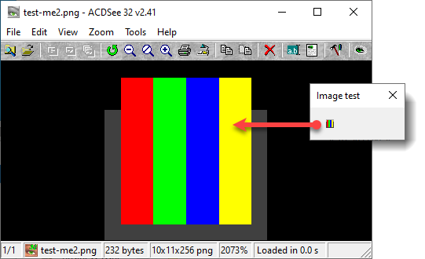

PNG creator function
This function was written by Jongware. I duplicate his post here on my site because it was lost from its original location after the forum upgrade and I want to make sure it won’t be lost again.

After seeing Marc Autret's marvellous pngswatch script, I spent several hours creating PNGs with Photoshop, copying its hex data into Javascript compatible format, finding the relevant color bytes to change ... and all the while I was thinking, "there was an uncompressed PNG format, wasn't there?"
That's not because I have a bad memory.
Sure, Marc created his PNG in some other program, saved it as a compressed file, and 'only' changed the palette part in his script -- which involves delving quite deeply into the actual PNG format --, and that's a feasible way of doing the stuff he intended to: change jsut the color. But if you want to actually create a dropdown or listbox image on the fly -- say, for a line widths dropdown --, you have to be able to create an entire image a-new. And PNGs are notoriously difficult to create, because the image pixels themselves are compressed using the very advanced zlib compression.
But (as I was thinking) ... zlib also allows a "non-compressed" format!
With some sleuthing I found a couple of hints to get me started, and found a totally useful utility as well: pngcheck, which can take a PNG to bits and tell you what's wrong with it. So, here you have it: a lightweight PNGLIB Javascript, that can create any PNG right out of nothing!
Any image, apart from the limitations, that is.
Its main limitation is that you can only create 8-bit palettized PNGs with it. I see no reason to add umpteen functions to cater for the occasional 1-, 2-, or 4-bit or true color PNG, or to add total support for all the different types of transparency that PNG supports. But, hey, its main use is for icons, and you'll have to do with the limits of "just" 256 colors -- or even less than that, if you reserve one or more colors for transparency. On the plus side again, it's total real pixel alpha-level transparency we're talking about (overall that can make your graphics still better than the average '90s DOS game).
Using the function is easy; at the bottom of the script is an example, but it boils down to:
- Create a string for the palette's colors. Each color is a triplet, in RGB order.
- Create a string for the transparency indexes. Each single entry determines the transparency of the full palette color at that index; the first entry applies to color index #0, the second to color index #1, and so on. The value [00] indicates zero opacity (fully transparent), the value [FF] full opacity. The transparency index string doesn't need to define all of your colors' transparencies; unlisted values are "normal", non-transparent, and if you only need to make color index #0 transparent, you are done right there and then. By the way, the transparency string may be omitted entirely if you don't need it.
- Create a string for the image itself -- wide x high color indexes. Make sure you fill the entire image, 'cause my function will refuse to work if this string length isn't correct.
- Then call my function: myImg = makePng (wide, high, palette, pixels [, transparency]);
- The returned string can be used immediately as a source for a ScriptUI dialog image, or -- less useful, but might come in handy -- be written to a file.
Tips: hmm. I dunno. Don't use this function to create super-huge PNGs, I guess. The non-compression format uses a couple of checksums on its own, and they are sure to fail on very large images. But, come on, be realistic: it's not a Photoshop replacement we're talking about, it's for icons!
And Be Kind to Your Users: it's rather overkill to include all of the data for a static PNG image, such as a logo or something. Just create that once, and include the binary data in your script! This function is designed to create PNGs on the fly, from variable rather than static data.
Before I forget: here it is. Enjoy!
Click here to download the function.
See also:
IconMaker function
IdExtenso/tools/SelToPng.jsx by Marc Autret